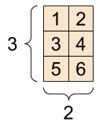
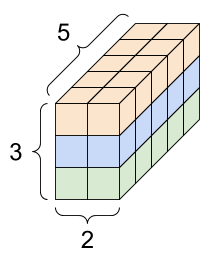

import tensorflow as tf
print(tf.__version__)2.15.0Akmal Fadhlurrahman
April 8, 2024
Kenapa tiba-tiba muncul ide untuk buat blogpost tentang TensorFlow?
Jawabannya: sesungguhnya saya mendapatkan voucher sertifikasi TensorFlow Developer gratis dari Bangkit Academy (bernilai US$100) karena pernah menjadi kontributor di sana untuk beberapa sesi.
Dan oleh karena itu saya perlu mempelajari seluk-beluk pemrograman TensorFlow sebelum voucher tersebut kadaluarsa pada akhir Mei 2024 (tinggal 2 bulan lagi ketika blog ini ditulis…).
Dan sejujurnya selama karir saya sebagai data scientist, saya belum mendalami teknik-teknik deep learning dengan seksama, apalagi dengan menggunakan library TensorFlow. (Saya belajar dengan library scikit-learn dan yang mirip-mirip dengan scikit-learn).
Jadi saya kemudian membeli tiga course dariUdemy: TensorFlow Developer Certificate Bootcamp, TensorFlow 2.0: Deep Learning and Artificial Intelligence, dan A Deep Understanding of Deep Learning lalu mulai belajar dari dasar-dasarnya. (Semoga dapat reimburse dari kantor, amin!)
Tapi kemudian course-course itu gak ditonton dan/atau diterapkan selama 2 bulan :) Padahal waktu belajarnya cuman 4 bulan :))
Jadi supaya ada progress, akhirnya dicobalah untuk learn in public: secara periodik nulis “laporan” yang dishare di publik, supaya jadi motivasi belajar.
Blog ini akan dipecah menjadi 5 bagian sesuai dengan silabus ujian Tensorflow Developer
TensorFlow developer skills (blog ini)
Membuat model neural network dengan TensorFlow 2.x
Klasifikasi gambar (image classification)
Pemrosesan bahasa alami (natural language processing/NLP)
Model runtun waktu, barisan, dan peramalan (time series, sequences, and predictions) –> ini emang terjemahannya bener ya??
Di Python, library TensorFlow (TF) terbaru bisa diinstall dari pip:
Untuk pengguna MacOS, TensorFlow versi 2.12 ke bawah bisa diinstall dengan
Dan untuk MacOS dengan prosesor Apple Silicon, direkomendasikan untuk menginstall plugin tensorflow-metal:
Untuk mengecek versi TF yang terinstall, gunakan __version__:
Mengapa untuk MacOS dengan prosesor Apple Silicon kita perlu menginstall plugin tensorflow-metal? Karena keberadaan hardware GPU pada Apple Silicon dapat digunakan untuk mempercepat proses training model TensorFlow. Hal yang sama berlaku ketika menggunakan TensorFlow dengan Google Colab; penggunaan GPU/TPU akan mempercepat waktu training model-model TF.
Untuk melihat hardware apa yang dapat digunakan oleh TF:
[PhysicalDevice(name='/physical_device:CPU:0', device_type='CPU'),
PhysicalDevice(name='/physical_device:GPU:0', device_type='GPU')]Terlihat bahwa di sini kita bisa menggunakan GPU, karena saya membuat website ini di laptop dengan Apple Silicon.
Struktur data yang paling dasar dalam TensorFlow adalah Tensor (d’uh). Mengutip dari dokumentasi resmi TensorFlow:
Tensors are multi-dimensional arrays with a uniform type (called a
dtype). You can see all supporteddtypesattf.dtypes.If you’re familiar with NumPy, tensors are (kind of) like
np.arrays.All tensors are immutable like Python numbers and strings: you can never update the contents of a tensor, only create a new one.
Karena Tensor pada dasarnya adalah array multidimensi, maka Tensor bisa berbentuk skalar (array berdimensi 0), vektor (array dimensi 1), matriks (array dimensi 2), tumpukan matriks (array dimensi 3), atau tumpukan dari tumpukan matriks (array dimensi 4), dan seterusnya

Contoh: Ketika melakukan image classification, gambar atau video bisa diubah menjadi array dimensi 3 yang memisahkan RGB color channel-nya (red, green, blue).
Untuk membuat tensor, kita bisa menggunakan tf.constant()
tf.Tensor(1, shape=(), dtype=int32)
tf.Tensor([1 2], shape=(2,), dtype=int32)
tf.Tensor(
[[1 2]
[3 4]], shape=(2, 2), dtype=int32)
tf.Tensor(
[[[1 2]
[3 4]]
[[5 6]
[7 8]]], shape=(2, 2, 2), dtype=int32)Kadangkala kita perlu membuat tensor dengan isi nol semua, kita bisa menggunakan tf.zeros:
<tf.Tensor: shape=(2, 3, 4, 5), dtype=float32, numpy=
array([[[[0., 0., 0., 0., 0.],
[0., 0., 0., 0., 0.],
[0., 0., 0., 0., 0.],
[0., 0., 0., 0., 0.]],
[[0., 0., 0., 0., 0.],
[0., 0., 0., 0., 0.],
[0., 0., 0., 0., 0.],
[0., 0., 0., 0., 0.]],
[[0., 0., 0., 0., 0.],
[0., 0., 0., 0., 0.],
[0., 0., 0., 0., 0.],
[0., 0., 0., 0., 0.]]],
[[[0., 0., 0., 0., 0.],
[0., 0., 0., 0., 0.],
[0., 0., 0., 0., 0.],
[0., 0., 0., 0., 0.]],
[[0., 0., 0., 0., 0.],
[0., 0., 0., 0., 0.],
[0., 0., 0., 0., 0.],
[0., 0., 0., 0., 0.]],
[[0., 0., 0., 0., 0.],
[0., 0., 0., 0., 0.],
[0., 0., 0., 0., 0.],
[0., 0., 0., 0., 0.]]]], dtype=float32)>atau untuk membangkitkan tensor acak, gunakan tf.random.Generator
Selain Tensor, terdapat jenis data lain yang ada di TF, yakni Variable. Sesuai namanya, Variable adalah Tensor yang nilainya dapat diubah-ubah dengan menggunakan metode .assign()
<tf.Variable 'Variable:0' shape=(2,) dtype=int32, numpy=array([10, 7], dtype=int32)><tf.Variable 'UnreadVariable' shape=(2,) dtype=int32, numpy=array([3, 5], dtype=int32)>Variable digunakan oleh TensorFlow salah satunya untuk melakukan diferensiasi (menghitung \(\dfrac{\partial f}{\partial w_i}\)) dan menyimpan nilai bobot (\(w_i\)) ketika training model.
Namun apabila kita memiliki Variable yang tidak perlu di-train (misal: step counter), maka kita bisa menyetel variable sebagai non-trainable, contoh:
Seperti array Numpy, kita bisa menarik beberapa informasi seputar tensor:
print(rank4.dtype) # Tipe data dtype di tensor rank4
print(rank4.shape) # Bentuk data tensor
print(rank4.ndim) # Jumlah dimensi tensor (karena datanya berbentuk 2x3x4x5 --> 4 dimensi)
print(tf.size(rank4).numpy()) # Karena bentuk datanya 2x3x4x5 maka terdapat 120 item dalam tensor rank4<dtype: 'float32'>
(2, 3, 4, 5)
4
120Kita juga menggunakan indexing untuk melihat sebagian dari tensor, misal:
<tf.Tensor: shape=(1, 3, 2, 2), dtype=float32, numpy=
array([[[[0., 0.],
[0., 0.]],
[[0., 0.],
[0., 0.]],
[[0., 0.],
[0., 0.]]]], dtype=float32)>Dan apabila diperlukan, kita bisa menambahkan dimensi baru dari tensor existing dengan menggunakan tf.newaxis:
# Crate a r2x2 tensor (2 dimensions)
rank2 = tf.constant([[10, 3],
[2, 5]])
# Add in extra dimension to our rank 2 tensor toi make 2x2x1 tensor
rank3_exp = rank2[..., tf.newaxis]
rank3_exp<tf.Tensor: shape=(2, 2, 1), dtype=int32, numpy=
array([[[10],
[ 3]],
[[ 2],
[ 5]]], dtype=int32)>Apabila diperlukan, kita juga bisa melakukan kebalikannya: Menghilangkan semua single dimensions dengan fungsi tf.squeeze():
# Create a tensor to get started
tf.random.set_seed(42)
G = tf.constant(tf.random.uniform(shape=[50]), shape=(1,1,1,2,25))
G<tf.Tensor: shape=(1, 1, 1, 2, 25), dtype=float32, numpy=
array([[[[[0.6645621 , 0.44100678, 0.3528825 , 0.46448255, 0.03366041,
0.68467236, 0.74011743, 0.8724445 , 0.22632635, 0.22319686,
0.3103881 , 0.7223358 , 0.13318717, 0.5480639 , 0.5746088 ,
0.8996835 , 0.00946367, 0.5212307 , 0.6345445 , 0.1993283 ,
0.72942245, 0.54583454, 0.10756552, 0.6767061 , 0.6602763 ],
[0.33695042, 0.60141766, 0.21062577, 0.8527372 , 0.44062173,
0.9485276 , 0.23752594, 0.81179297, 0.5263394 , 0.494308 ,
0.21612847, 0.8457197 , 0.8718841 , 0.3083862 , 0.6868038 ,
0.23764038, 0.7817228 , 0.9671384 , 0.06870162, 0.79873943,
0.66028714, 0.5871513 , 0.16461694, 0.7381023 , 0.32054043]]]]],
dtype=float32)>(<tf.Tensor: shape=(2, 25), dtype=float32, numpy=
array([[0.6645621 , 0.44100678, 0.3528825 , 0.46448255, 0.03366041,
0.68467236, 0.74011743, 0.8724445 , 0.22632635, 0.22319686,
0.3103881 , 0.7223358 , 0.13318717, 0.5480639 , 0.5746088 ,
0.8996835 , 0.00946367, 0.5212307 , 0.6345445 , 0.1993283 ,
0.72942245, 0.54583454, 0.10756552, 0.6767061 , 0.6602763 ],
[0.33695042, 0.60141766, 0.21062577, 0.8527372 , 0.44062173,
0.9485276 , 0.23752594, 0.81179297, 0.5263394 , 0.494308 ,
0.21612847, 0.8457197 , 0.8718841 , 0.3083862 , 0.6868038 ,
0.23764038, 0.7817228 , 0.9671384 , 0.06870162, 0.79873943,
0.66028714, 0.5871513 , 0.16461694, 0.7381023 , 0.32054043]],
dtype=float32)>,
TensorShape([2, 25]))Sejauh ini, kita hanya bekerja dengan tensor ber-dtype int32. Mari kita membuat sebuah tensor bertipe float:
(<tf.Tensor: shape=(2, 2), dtype=float32, numpy=
array([[1., 2.],
[3., 4.]], dtype=float32)>,
<tf.Tensor: shape=(2, 2), dtype=float32, numpy=
array([[5., 6.],
[7., 8.]], dtype=float32)>)Untuk beberapa kasus, kita perlu mengubah tensor yang sudah ada menjadi data type yang lain. Untuk itu, kita bisa menggunakan fungsi tf.cast()
import numpy as np
# Create a random tensor of values between -100 and 100 of size 50
E = tf.constant(np.random.randint(-100,100,size = 50))
E<tf.Tensor: shape=(50,), dtype=int64, numpy=
array([-44, -60, -45, 47, 20, -52, -25, -28, -10, 98, -93, -90, 69,
52, -5, -87, 17, 37, 95, -54, -63, 25, 89, 3, 39, 63,
-78, 14, 37, 33, 85, -96, 77, -8, 31, -36, 34, -25, -2,
-73, -60, 98, 52, 87, 5, -63, 26, 95, -47, 85])><tf.Tensor: shape=(50,), dtype=float32, numpy=
array([-44., -60., -45., 47., 20., -52., -25., -28., -10., 98., -93.,
-90., 69., 52., -5., -87., 17., 37., 95., -54., -63., 25.,
89., 3., 39., 63., -78., 14., 37., 33., 85., -96., 77.,
-8., 31., -36., 34., -25., -2., -73., -60., 98., 52., 87.,
5., -63., 26., 95., -47., 85.], dtype=float32)>Untuk menjumlahkan, mengalikan dengan skalar, dan perkalian matriks, operator Python standar +, *, @ tetap bisa digunakan:
tf.Tensor(
[[ 6. 8.]
[10. 12.]], shape=(2, 2), dtype=float32)
tf.Tensor(
[[0.33333334 0.6666667 ]
[1. 1.3333334 ]], shape=(2, 2), dtype=float32)
tf.Tensor(
[[19. 22.]
[43. 50.]], shape=(2, 2), dtype=float32)
Meskipun demikian, best practice untuk melakukan operasi-operasi tersebut adalah dengan menggunakan fungsi-fungsi native Tensorflow, seperti tf.add, tf.multiply, dan tf.matmul:
tf.Tensor(
[[ 6. 8.]
[10. 12.]], shape=(2, 2), dtype=float32)
tf.Tensor(
[[0.33333334 0.6666667 ]
[1. 1.3333334 ]], shape=(2, 2), dtype=float32)
tf.Tensor(
[[19. 22.]
[43. 50.]], shape=(2, 2), dtype=float32)
Untuk mencari nilai min/max/mean/sum/variance dari suatu tensor, kita bisa menggunakan fungsi-fungsi reduksi berikut:
# Create a random tensor of values between -100 and 100 of size 50
E = tf.constant(np.random.randint(-100,100,size = 50))
print(E)
# Find the minimum
print("Minimum: ", tf.reduce_min(E).numpy())
# Find the maximum
print("Maximum: ", tf.reduce_max(E).numpy())
# Find the average
print("Average: ", tf.reduce_mean(E).numpy())
# Find the sum
print("Total: ", tf.reduce_sum(E).numpy())
# Find the stdev and variance
# Notice that we convert the tensor into float dtype here
print("Standard deviation: ", tf.math.reduce_std(tf.cast(E, dtype=tf.float32)).numpy())
print("Variance: ", tf.math.reduce_variance(tf.cast(E, dtype=tf.float32)).numpy())
# Where the positional minimum and maximum of a tensor (argmin and argmax)
print("Positional minimum: ", tf.argmin(E).numpy())
print("Positional maximum: ", tf.argmax(E).numpy())tf.Tensor(
[-69 81 61 -58 79 -2 23 -53 -17 -15 63 -93 -90 -2 61 58 28 93
21 -8 64 42 -26 32 65 -68 59 6 -41 83 -80 -48 13 28 -16 -55
7 -7 58 89 39 83 35 -53 75 46 -85 49 83 -29], shape=(50,), dtype=int64)
Minimum: -93
Maximum: 93
Average: 12
Total: 609
Standard deviation: 54.624054
Variance: 2983.7874
Positional minimum: 11
Positional maximum: 17